Environment
| Base URL | http://localhost:5173 (Vite, /api proxied to :8080) |
|---|---|
| Auth contexts | e2e-author-135502, e2e-participant-135502, anonymous (later merged to e2e-guest-135502), fresh anonymous |
| Test data | local dev DB (head 0072); events 64292a46-… "E2E Piknik wymiany 135502", 87427a32-… "E2E Zakonczone 135502", ea4c69ad-… "E2E Swap \o/ 135502"; slug k-ac16defb20c2 |
Scenarios
✅ 4.1 Author creates event and sees author view
| # | Action | Actual | |
|---|---|---|---|
| 1 | Fill /add/event, no banner | Accepted | ✅ |
| 2 | Zapisz wydarzenie | /k-ac16defb20c2/event/64292a46-… + toast "Wydarzenie „…” zapisane" | ✅ |
| 3 | history.state | usr: null (cleared) | ✅ |
| 4 | Page order | header, when-card, description, chat, list, author card; no chip (org null) | ✅ |
| 5 | Author card | Edytuj → /events/:id/edit; Usuń enabled at 0 attendees | ✅ |
| 6 | Footer / empty copy | No footer; "Nikt jeszcze się nie zapisał." (no nudge) | ✅ |
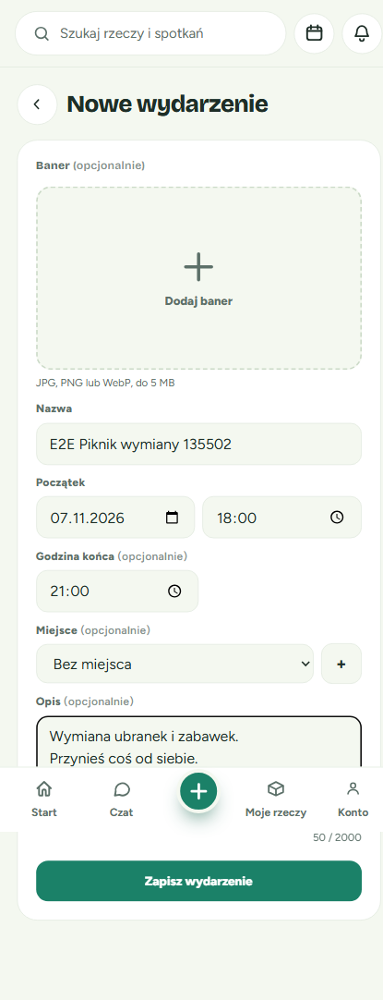
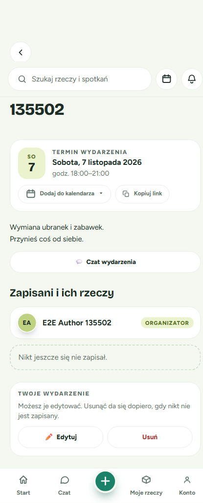
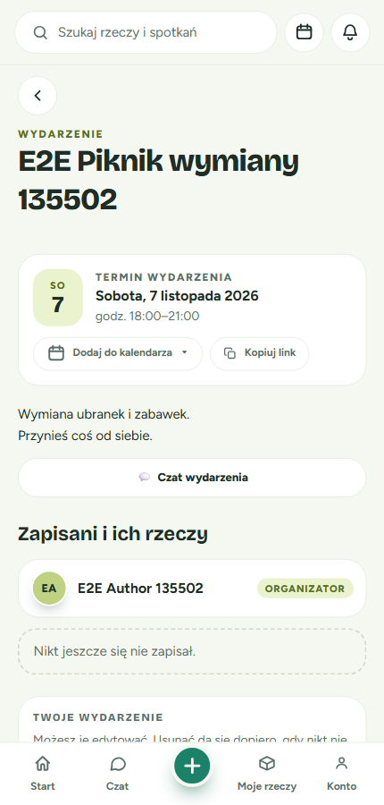
✅ 4.2 Anonymous visitor view and copy link
| # | Action | Actual | |
|---|---|---|---|
| 1 | Open URL | when-card, description, list; no chat row | ✅ |
| 2 | Empty copy | Includes "Zapisz się jako pierwsza osoba…" | ✅ |
| 3 | Footer | "＋ Zapisz się na wydarzenie", clickable | ✅ |
| 4 | Kopiuj link | Toast "Skopiowano link"; clipboard = URL | ✅ |
| 5 | Miejsce block | name, address, notes, Maps link + sr-only "(nowa karta)" | ✅ |
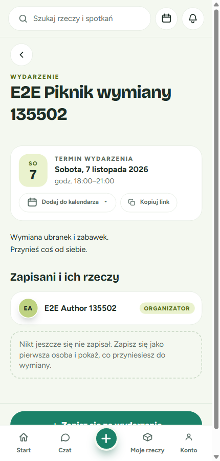
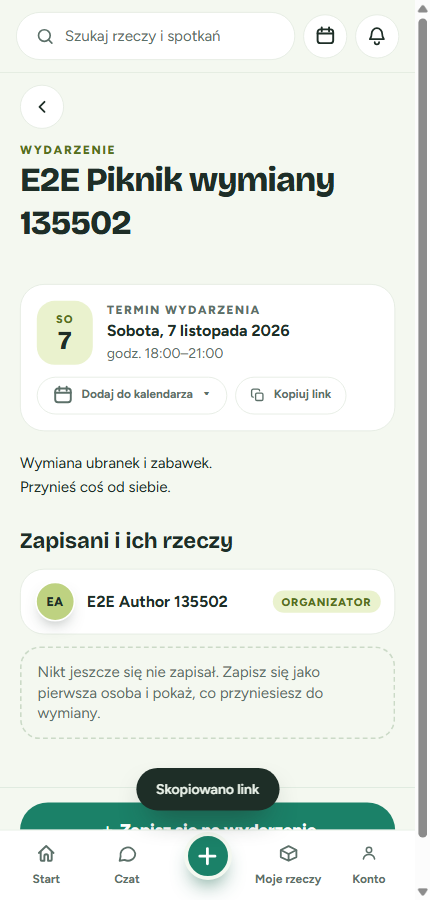
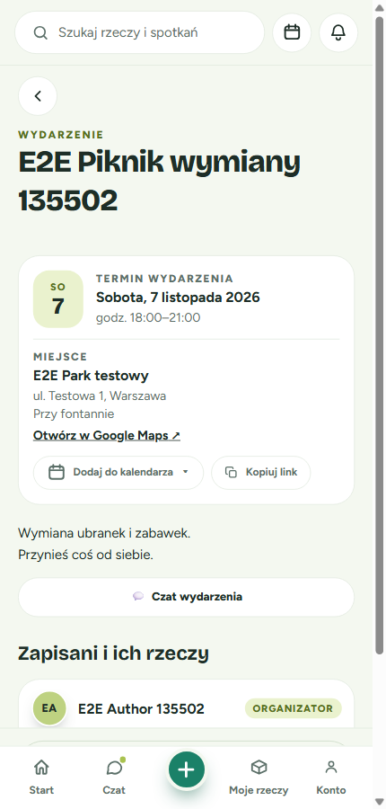
⚠️ 4.3 Guest sign-up and account merge
| # | Action | Actual | |
|---|---|---|---|
| 1 | Footer → sheet | Title, subtitle "… · sob. 7 listopada, 18:00", hint, login link with returnTo | ✅ |
| 2 | Blank submit | role=alert "Podaj swoje imię."; aria-invalid/describedby | ✅ |
| 3 | Name + Enter | Merge card "Zapisano Cię jako gościa ✓", no footer, guest listed, key written | ✅ |
| 4 | Załóż konto | Attendee view: chat, "To Ty", "Wypisz się" | ✅ |
| 5 | Card visuals | Divider above title (Cosmetic-1) | ⚠️ |

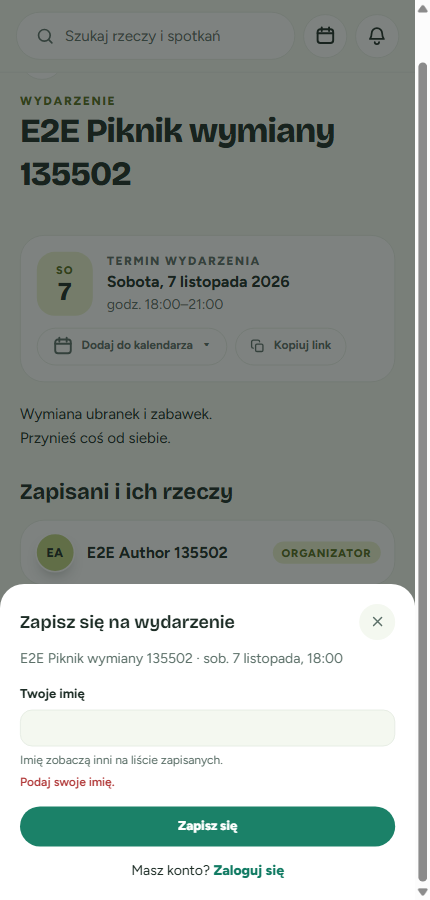

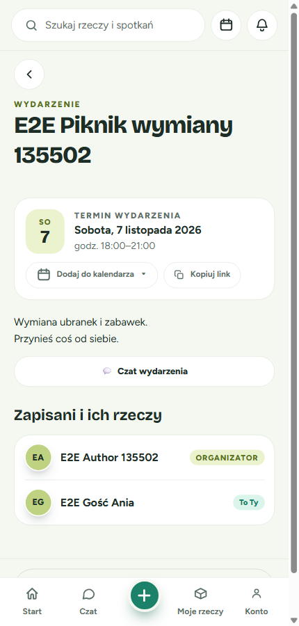
✅ 4.4 Logged-in participant: sign-up, chat, inbox, withdraw
| # | Action | Actual | |
|---|---|---|---|
| 1 | One-click sign-up | Toast "Zapisano na wydarzenie" | ✅ |
| 2 | State | "To Ty", "Wypisz się", chat row | ✅ |
| 3 | Chat row | Thread "E2E Piknik wymiany 135502 · czat wydarzenia", 3 uczestników | ✅ |
| 4 | Inbox | 🎉 + "Wydarzenie" chip | ✅ |
| 5 | Wypisz się | alertdialog with spec copy; no request until confirm | ✅ |
| 6 | Confirm | withdraw POST; toast "Wypisano z wydarzenia" | ✅ |
| 7 | Thread / inbox | "Nie masz dostępu do tej rozmowy."; inbox empty | ✅ |

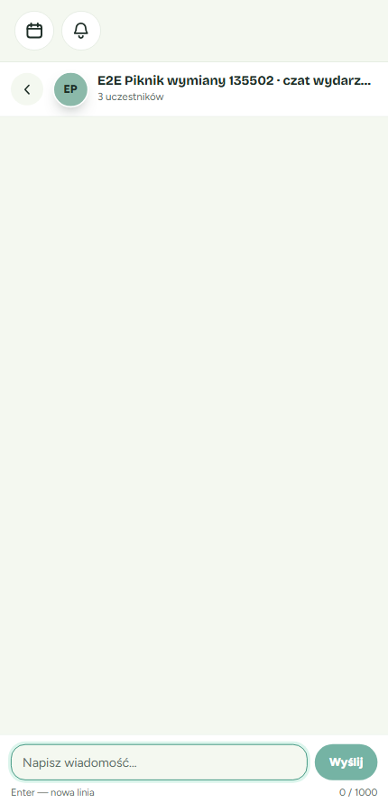
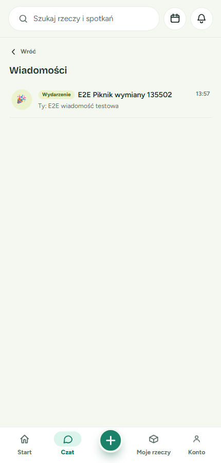
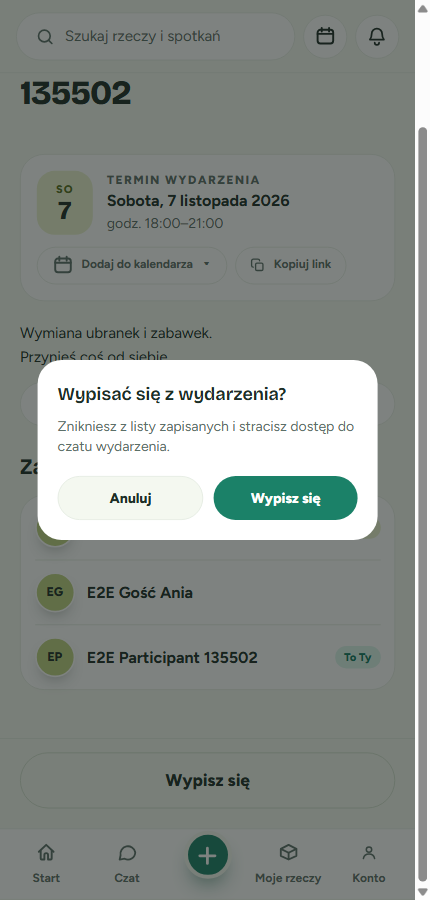
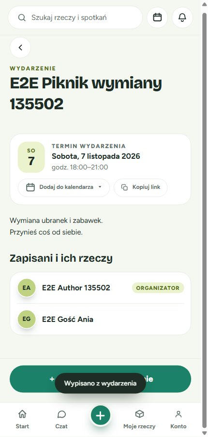
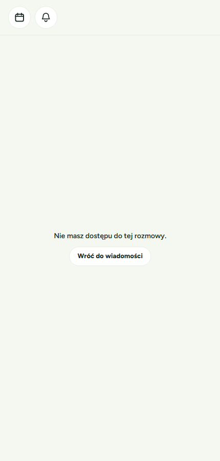
✅ 4.5 Author with attendees: delete blocked
| # | Action | Actual | |
|---|---|---|---|
| 1 | 2 attendees | aria-disabled; "Nie można usunąć — zapisały się już 2 osoby." | ✅ |
| 2 | Force-click Usuń | No dialog | ✅ |
| 3 | 1 attendee | "Nie można usunąć — zapisała się już 1 osoba." | ✅ |
| 4 | Author inbox | "Wydarzenie" chip, 1 unread, nav badge | ✅ |

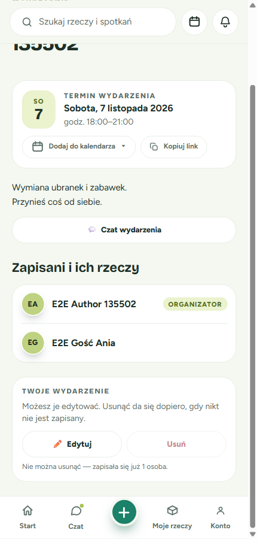
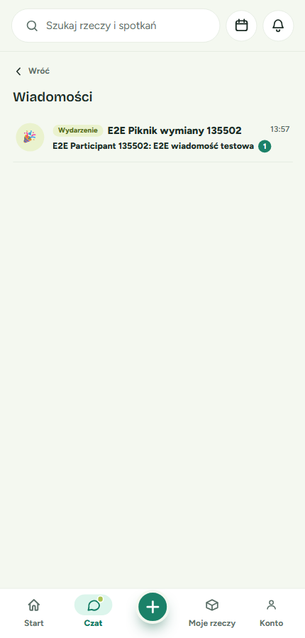
✅ 4.6 Spotkania "Biorę udział"
Event listed with href /k-ac16defb20c2/event/64292a46-…, no pencil. After withdraw: "Nie masz jeszcze żadnych zapisów."
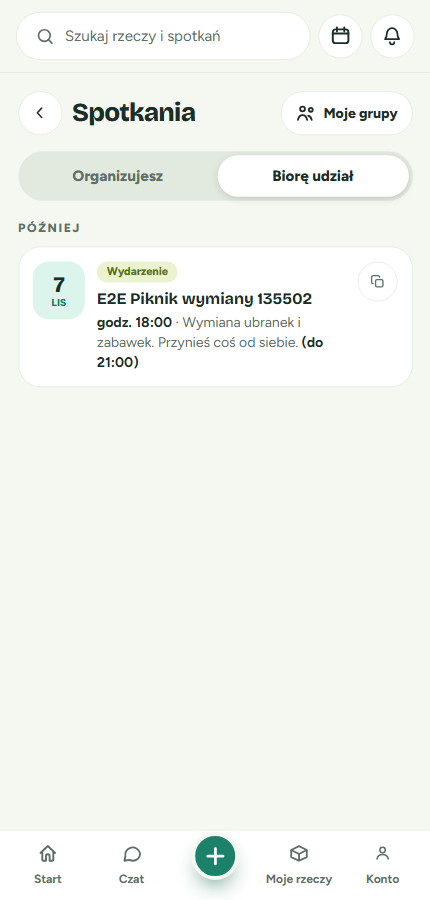
✅ 4.7 Ended event
A disabled "Wydarzenie się zakończyło" footer for logged-in non-author and anonymous viewers; the author sees the author card with no footer. API: sign-up after end gives 409; author sign-up gives 409.

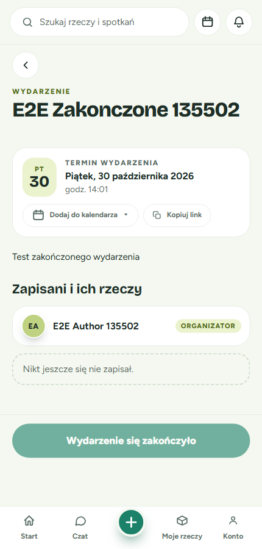
⚠️ 4.8 Old route removed, edit route kept
/events/<id> shows React Router's default 404 error page (accepted risk, Minor-1). /events/<id>/edit loads prefilled, with the back link to the slug URL.
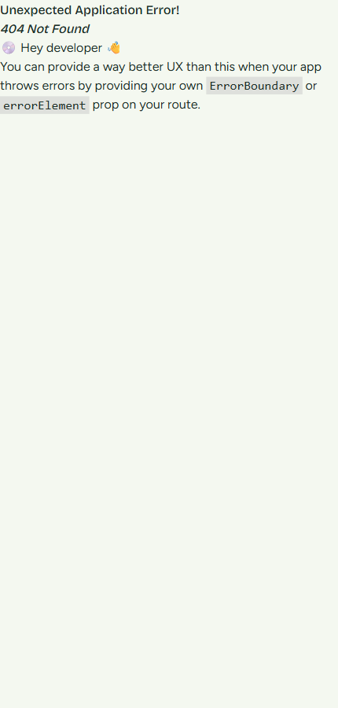
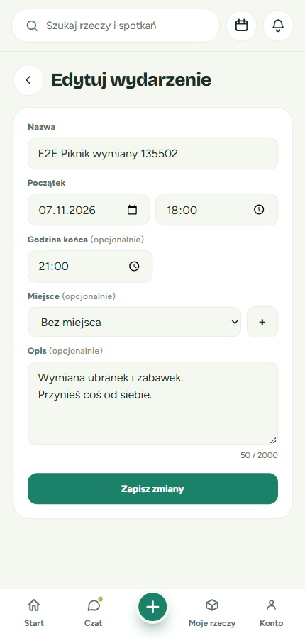
✅ 4.9 Backslash in event name
"E2E Swap \o/ 135502": direct load and reload on :5173 return 200; the backend OG route on :8080 returns 200 with <title>E2E Swap \o/ 135502</title>.
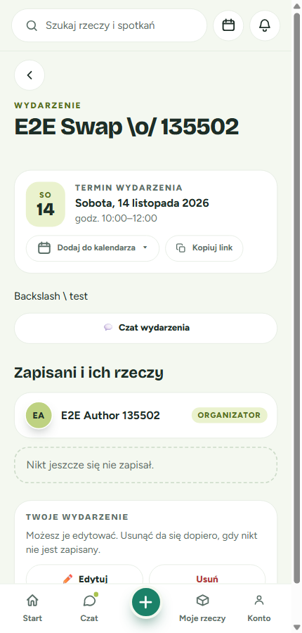
✅ 4.10 OG preview
| Request | Result |
|---|---|
| GET /k-ac16defb20c2/event/64292a46-… | title/og:title "E2E Piknik wymiany 135502"; og:description "sob 07.11 o 18:00 · E2E Park testowy Wymiana ubranek…" |
| Invalid UUID | Plain index (<title>aj</title>) |
| /api/event/<uuid> | 404 JSON |
| /api/events/<id> anonymous / garbage token | 200 / 200 |
| og:image | Not verifiable (no banner) |
Discrepancies
| Severity | Finding | Fix |
|---|---|---|
| cosmetic | Cosmetic-1: merge card shows an empty band and a divider above the title (mockup: divider between hint and fields). evidence | Drop/override AccountMergeForm's top border inside EventGuestMergeCard |
| minor | Minor-1: /events/<id> shows React Router's developer error page (accepted in spec) | Follow-up app-level errorElement |
| minor | Minor-2: og:description keeps a raw newline from the description | Optionally collapse whitespace |
| minor | Minor-3: first withdraw attempt ended withdrawn with no observed confirm click; not reproducible (controlled re-run correct) | None; optional manual spot-check |
Critical: none observed · Major: none observed
Console & Network Errors
| Source | Message | Frequency | Severity |
|---|---|---|---|
| /api/organizations/mine | 404 | Every authenticated app load (no Organization) | minor pre-existing |
| react-router-dom | No routes matched /events/<id> + default ErrorBoundary | Old route only | minor expected |
| :8080/favicon.ico | 404 | Once | cosmetic |
No console errors on any event page, sheet, thread, inbox or Spotkania screen.
Spec Alignment
Fully implemented: public detail without 401; logged-in and guest sign-up; blank-name validation; 409 after end and for author; withdraw with confirm; slug URLs everywhere observed; EVENT chat (header, inbox chip, unread, revoked on withdraw); OG title/description and reserved-slug guard; route changes; Spotkania; post-create toast via router state; gender-neutral copy; Miejsce block.
Partially implemented: none observed. Not implemented: none observed.
Extra: the page renders inside the app shell (search bar, bottom nav) for all viewers; the mockups show a bare page.
Variances from Plan
- Banner skipped (no storage keys locally), so banner render and
og:imageare unverified. - No listed items for test users, so item rows, thumbs, mode labels and "Pokaż wszystkie/Zwiń" are unverified.
- No Organization, so the org chip and theme are unverified (chip absence for org=null verified).
- Ended event made by starting in the current minute; the attendee+ended variant was unreachable.
- Plural for 5+ attendees not exercised.
- Moderation accepted all names.
Exit Criteria
| Criterion | Status | Evidence |
|---|---|---|
| 7 binding screens render; /events/<id> no longer a page route | ✅ | §4.1–4.8 |
| Guest sign-up, merge, logged-in sign-up, withdraw; 409 after end and for author | ✅ | §4.3, 4.4, 4.7 |
| Detail query count independent of participants/items | ✅ | Backend tests (not E2E-observable) |
| EVENT chat: access, inbox, unread; delete cascade | ✅ | §4.4, 4.5 (cascade not exercised in UI) |
| Migration 0071 up/down | ✅ | Not E2E-observable; DB at head |
| author_slug on every EventResponse; slug links everywhere | ✅ | API responses, Spotkania, edit links |
| OG preview with title, date, banner | ⚠️ | Title + date only; banner unverifiable |
| Attended events in Spotkania | ✅ | §4.6 |
Recommendations
- Must fix before merge: none.
- Should fix soon: Cosmetic-1.
- Nice-to-have: Minor-2, Minor-1 follow-up, Minor-3 spot-check; manually check items/banner/org chip on a seeded account.